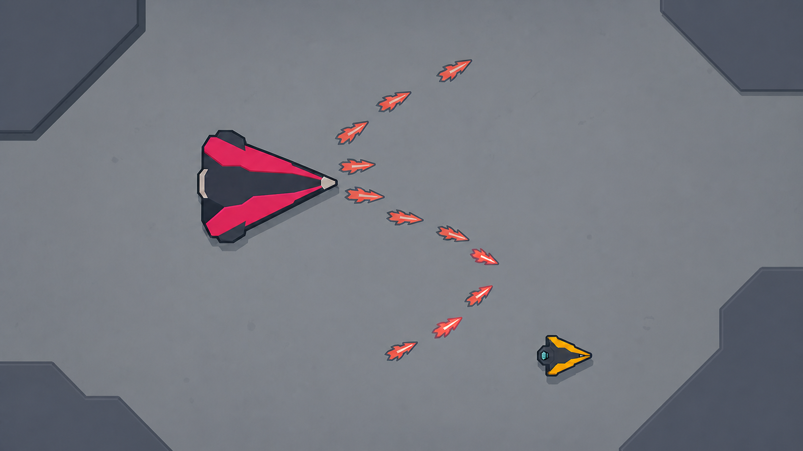

Stage 1 · Foundry Colossus
각도 코일 / 역코일
angular_coil · foundry_burst 교체우선 구현 권장 · 새 탄환 이동 상태 불필요

보스가 조준 기준각을 한 번 고정한 뒤 탄환을 한 발씩 발사한다. 첫 절반은 발사각을 일정하게 증가시키고, 나머지 절반은 증가 방향을 뒤집는다. 개별 탄환은 끝까지 직선으로 움직이지만 시간차를 둔 탄환 묶음은 C자에서 S자로 접히는 코일처럼 보인다.
- 1 · 준비플레이어의 예측 위치로 기준각을 한 번 고정한다.
- 2 · 전개0.08초 간격으로 한 발씩, 각도 증분을 적용해 12발을 쏜다.
- 3 · 역코일중간부터 각도 증분의 부호를 바꿔 두 번째 빈 공간을 만든다.
기존
fan과의 차이
다섯 발을 동시에 같은 각도로 반복하지 않는다. 플레이어는 고정 부채꼴의 틈이 아니라 시간에 따라 이동하는 곡선형 빈 공간을 읽는다.
| 초기 튜닝 | 준비 0.85초 · 발사 0.96초 · 회복 0.90초 |
|---|---|
| 최대 탄환 | 12발 · 한 번에 한 발 생성 |
| 이동 법칙 | 각 탄환은 직선 · 발사기 각도만 순차 변경 |
| 표적 규칙 | 준비 종료 시 한 번 고정 · 이후 추적 없음 |
| 회피 핵심 | 코일 안쪽으로 파고들지, 바깥쪽으로 빠질지 조기에 선택 |